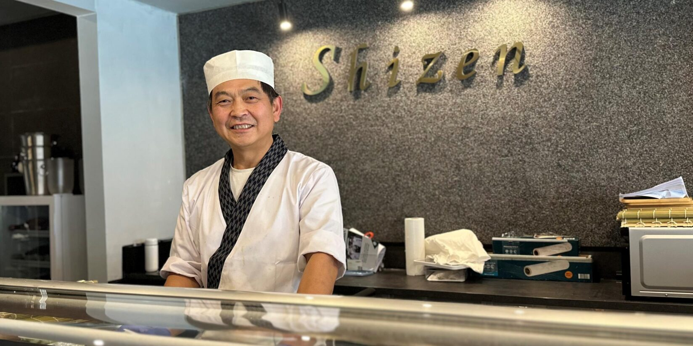

I
01 · Nigiri
Nigiri Omakasezwölf Stücke, nach Tagesfang
Vom Meister, einzeln über den Tresen gereicht — Temperatur, Reis, Fisch.
Sushi, Sashimi & Tempura — aus der Hand von
Songchun Li, am Rosental im Herzen Dortmunds.

„Erst der Fisch, dann die Hand.
Leises Werkzeug, wenig Salz —
Stück für Stück, ruhig und genau."
Was wir in Kyōto gelernt haben, bringen wir jetzt ans Rosental.
Vom Meister, einzeln über den Tresen gereicht — Temperatur, Reis, Fisch.
Ebi, Kabocha, Nasu — leichter Teig, Sesamöl, eine Schale Ten-tsuyu.
Sushireis, zwölf Fische verstreut, Ikura, Tamago, Nori-Stäbchen.
Rosental 12
44135 Dortmund
Di — Sa
12:00 / 17:30 — 22:30
Omakase ab € 68
à la carte · Sake
+49 231 · 000 000
hallo@shizen-dortmund.de